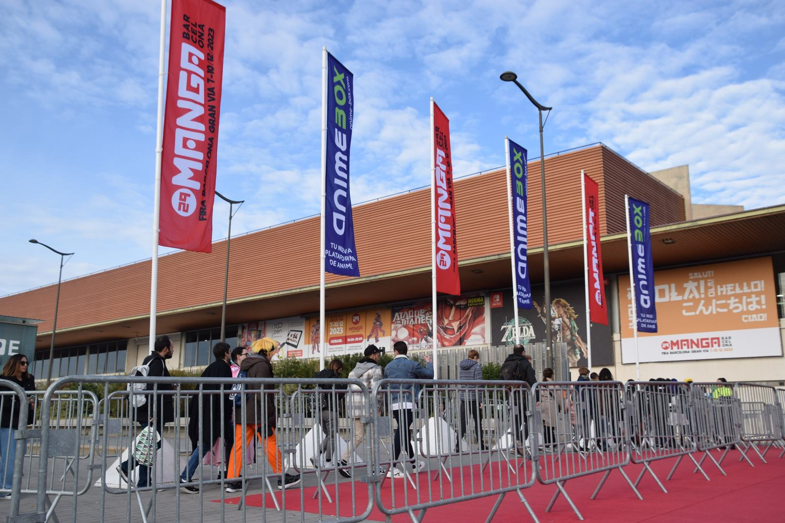

Festivals · Culture
Manga Barcelona 32
- Dates
- –
- Venue
- Fira Barcelona Gran Via
- Location
- Barcelona, Spain
- Format
- In-person
- Category
- Culture
- Industry
- Japanese popular-culture convention
- Organiser
- Ficomic
- Official website
- https://www.mangabarcelona.com/
About
Dates are local to the host city (Central European Time, UTC+1 / UTC+2 in summer; Canary Islands are UTC+0 / UTC+1 in summer).
Topics: manga, anime, popular culture, comics.
No organiser attendance figure found on the official pages fetched 24 Nov 2026. Ranked by our estimated size tier 'very large' (100,000+ attendees/visits), a judgement from format, venue and scale, not an official number.
Sources
- Official — https://www.mangabarcelona.com/
Hotels
- Melià Barcelona — 5★ · Avinguda Sarrià 50, 08029 Barcelona · 4.2 km from the venue · from USD 160.50/night · 5–7 December 2026 · as of 24 November 2026
- Intercontinental Barcelona — 5★ · Avinguda Rius i Taulet 1-3, 08004 Barcelona · 3.0 km from the venue · Price on request
- Hotel Gran Melià Torre Melina — 5★ · Avinguda Diagonal 661-671, 08028 Barcelona · 3.4 km from the venue · Price on request
- Hotel Fira Congress — 4★ · Carrer José Agustín Goytisolo 9-13, 08908 Hospitalet de Llobregat, l' · 0.3 km from the venue · Price on request
- Hesperia Tower — 5★ · Carrer Gran Via 144, 08907 Hospitalet de Llobregat, l' · 1.9 km from the venue · Price on request
- Hotel Nobu Barcelona — 5★ · Avinguda DE ROMA 2-4, 08014 Barcelona · 3.0 km from the venue · Price on request
- Bagués — 5★ · Carrer Rambla 105, 08001 Barcelona · 4.8 km from the venue · Price on request
- Hotel Porta Fira — 4★ · Plaça Europa 45, 08908 Hospitalet de Llobregat, l' · 0.2 km from the venue · Price on request
- Renaissance Barcelona Fira — 4★ · Plaça Europa 50, 08902 Hospitalet de Llobregat, l' · 0.5 km from the venue · Price on request
- SB Plaza Europa — 4★ · Carrer Ciències 11-13, 08908 Hospitalet de Llobregat, l' · 0.6 km from the venue · Price on request